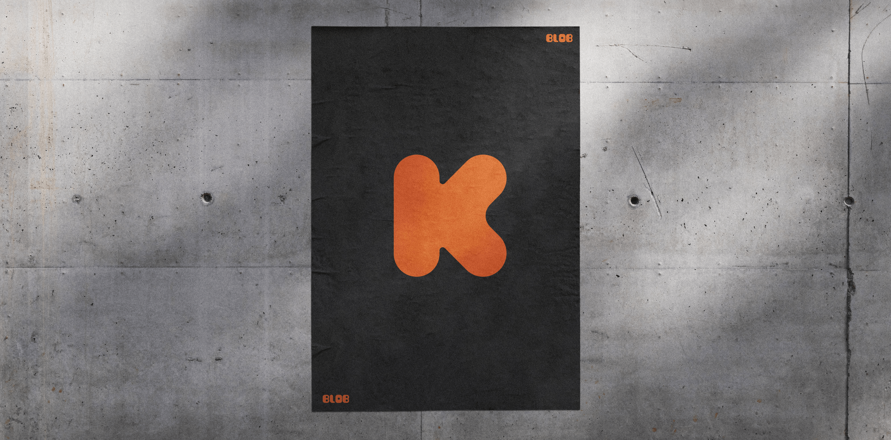
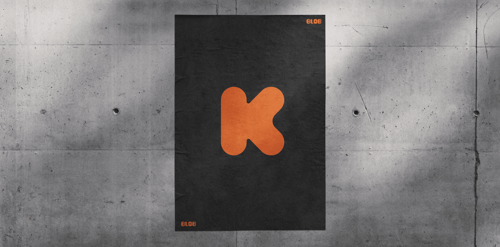

Blob is the definitive font for a playful design. Ignites from the basics of spherical shapes, this eye-catching font will bring joy to your next project.
“I have no idea what we do. As citizens we cede more and more of our autonomy, but if we the government take away the citizens’ freedom to cede their autonomy we’re now taking away their anatomy. It’s a paradox. Citizens are constitutionally empowered to choose to default and leave the decisions to corp
“ThE Right Man in the wrong place can make all the Difference in the world”

In a culture like ours, long accustomed to splitting and dividing all things as a means of control, it is sometimes a bit of a shock to be reminded that, in operational and practical fact, the medium is the message. This is merely to say that the personal and social consequences of any medium-- that is, of any extension of ourselves -- result from the new scale that is introduced into our affairs by each extension of ourselves, or by any new technology. Thus, with automation, for example, the new patterns of human association tend to eliminate jobs, it is true. That is the negative result. Positively, automation creates roles for people, which is to say depth of involvement in their work and human association that our preceding mechanical technology had destroyed. Many people would be disposed to say that it was not the machine, but what one did with the machine, that was its meaning or message. In terms of the ways in which the machine altered our relations to one another and to ourselves, it mattered not in the least whether it turned out cornflakes or Cadillacs. The restructuring of human work and association was shaped by the technique of fragmentation that is the essence of machine technology. The essence of automation technology is the opposite. It is integral and decentralist in depth, just as the machine was fragmentary, centralist, and superficial in its patterning of human relationships. The instance of the electric light may prove illuminating in this connection. The electric light is pure information. It is a medium without a message, as it were, unless it is used to spell out some verbal ad or name. This fact, characteristic of all media, means that the "content" of any medium is always another medium. The content of writing is speech, just as the written word is the content of print, and print is the content of the telegraph. If it is asked, "What is the content of speech?," it is necessary to say, "It is an actual process of thought, which is in itself nonverbal." An abstract painting represents direct manifestation of creative thought processes as they might appear in computer designs. What we are considering here, however, are the psychic and social consequences of the designs or patterns as they amplify or accelerate existing processes.
“Americans are in a way crazy. We infantilize ourselves. We don’t think of ourselves as citizens—parts of something larger to which we have profound responsibilities. We think of ourselves as citizens when it comes to our righTs and privileges, but not our responsibilities. We abdicate our civic responsibilities to the government and expect the government, in effect, to legislate morality. I’m talking mostly about economics and business, because that’s my area.” “What do we do to stop the decline?” “I have no idea what we do. As citizens we cede more and more of our autonomy, but if we the government take away the citizens’ freedom to cede their autonomy we’re now taking away their anatomy. It’s a paradox. Citizens are constitutionally empowered to choose to default and leave the decisions to corporations and to a government we


Blob
A
uppercase
ABCDEFGHIJKLMNOPQRSTUVWXYZ
lowercase
abcdefghijklmnopqrstuvwxyz
uppercase accents & diacritics
ÁÂÄÀÃÇÉÊËÈÍÎÏÌÑÓÔÖÒÕÚÛÜÙẂŴẄẀÝŶŸỲ
lowercase accents & diacritics
áâäàãçéêëèíîïìñóôöòõúûüùẃŵẅẁýŷÿỳ
stylistic set 01
HMNOQR
numerals
0123456789
punctuation & symbols
.,:;!¡?¿·•*#//\-–—_()™
currency & math
$+−×÷=
DesignerKalil Fiat
Publisherbasement.studio
Release dateJuly 2022
Last version1.2.1 (
November 2022
)
Formatsotf, woff, woff2, ttf
Glyphs160
DescriptionBlob is the definitive font for a playful design. Igniting the desire to create a font from basic spherical shapes, this eye-catching font will bring joy to your next project. Its bold and heavy weight is balanced by the roundness and friendliness of the letterforms.
SpecimenDownload Specimen